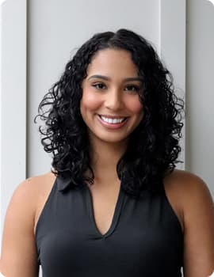
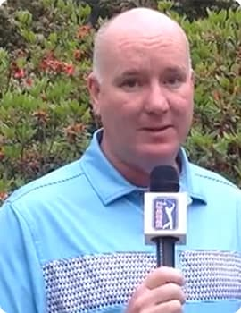
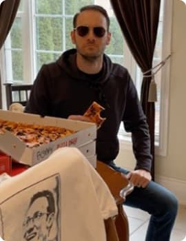
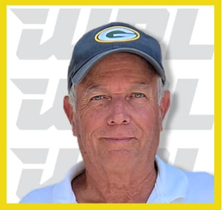

Hawaii Rumble in Myrtle Beach, South Carolina, February 27-28, 2023.
US National Mini Golf Team member Gary Hester (+550 field) won the inaugural World
Putting League Championship at
Hawaiian Rumble Minigolf in Myrtle Beach, S.C. after shooting a final round 31 for 5 under par to defeat
Matt McCaslin
(33, 3 under par; +190 pre-tournament to win) and take home the $5,000 championship purse.
Hester finished the Day 1 qualifying rounds by shooting 32 (-4) and 31 (-5), respectively, to combine
for 9 under par
and the No. 2 seed heading into the Day 2 match play bracket. After Day 1, Hester’s odds to win moved to
+420.
Hester defeated Rick Alessi with a 35 (-1) in the quarterfinals before squeaking by Joey Graybeal in the
semifinals by
one stroke, 32 (-4) to 33 (-3). Graybeal entered the Day 2 quarterfinals as the top seed (-350 to win
after Day 1) after
pacing the field with a combined -9 in the two qualifying rounds.
Featuring:

Kaz Brown
On-Air Host From Pro League Network

Brian Katrek
Tournament Commentator And Host Of PGA TOUR Radio

Rob Pizzola
Featured Guest
Winner Of The Last WPL Event
Gary Hester
North Carolina
Teeing off his Mini Golf career in 1969, Gary has over 50 years of
experience in the sport. He started at the Arnold
Palmer Mini Golf course in High Point, NC, where he took home four straight championships. In the
USPMGA Masters, he has
won multiple senior divisions and has registered 11 top ten and two second place finishes in the
main draw. Gary has
also represented the US National Mini Golf Team at the World Mini Golf Championships for the last
few years. In Sweden
he finished as the top American and finished third overall.
